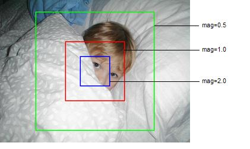

As implied in the previous section, when a read() call is made to an image stage, the scene of interest must be specified. A scene, implemented by the LTIScene class, has three basic properties:
The position is expressed in pixel space, relative to the given magnification, with (0,0) and (w-1,h-1) being the upper-left and lower-right corners of the image, where w and h are the width and height of the image (in pixels).
The scene width and height are also expressed in terms of pixels, but at the magnification of the scene. That is, the width and height values represent the pixel dimensions of the scene as decoded to the output buffer.
The magnification value is a floating point value representing the resolution or scale at which the image is to be read. A magnification of 1.0 corresponds to the full resolution of the image (one to one); a value of 0.5 represents the image at a downsampled view of half the full width and height, and a value of 2.0 represents the image at an upsampled view of twice the full width and height. Note: Only powers of two are supported for most image types (although filters for arbitrary resampling are available).
As an example, consider an image that is 640x480 pixels, as shown in Figure 1.

Figure 1: Input scene; (x,y)=(0,0) (w,h)=(640, 480) mag=1.0
The
Figure 2: Red Input scene: (x,y)=(320-100, 240-100) (w,h)=(200,200) mag=1.0
The
Figure 3: Blue Input scene: (x,y)=(160-100, 120-100) (w,h)=(200,200) mag=2.0 Corresponding scene at mag=1.0: (x,y)=(320-50, 240-50) (w,h)=(100, 100)
The
Figure 4: Green Input scene: (x,y)=(640-100, 480-100) (w,h)=(200,200) mag=0.5 Corresponding scene at mag=1.0: (x,y)=(320-200, 240-200) (w,h)=(400,400)
At mag=2.0 the scene is effectively sampling from an image of size 1280x960. Thus the center is 640 (=320 * mag) by 480 (=240 * mag). Likewise at mag=0.5 the scene is sampling from an image of size 320x240.
NOTE: Not all image formats natively support multiresolution decoding. MrSID and JPEG 2000, being wavelet-based systems, efficiently support decoding at powers-of-two scales. In order to achieve this effect with other formats a resampling filter must be applied.